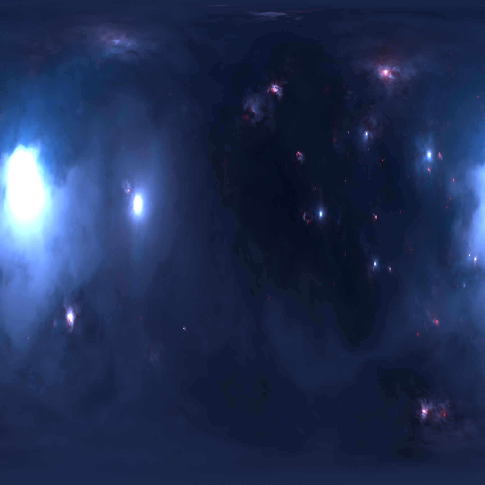
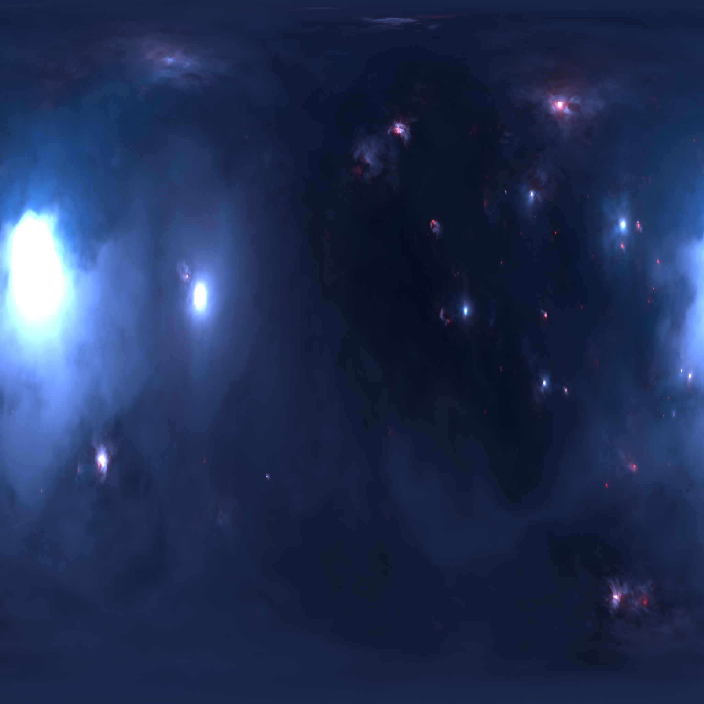
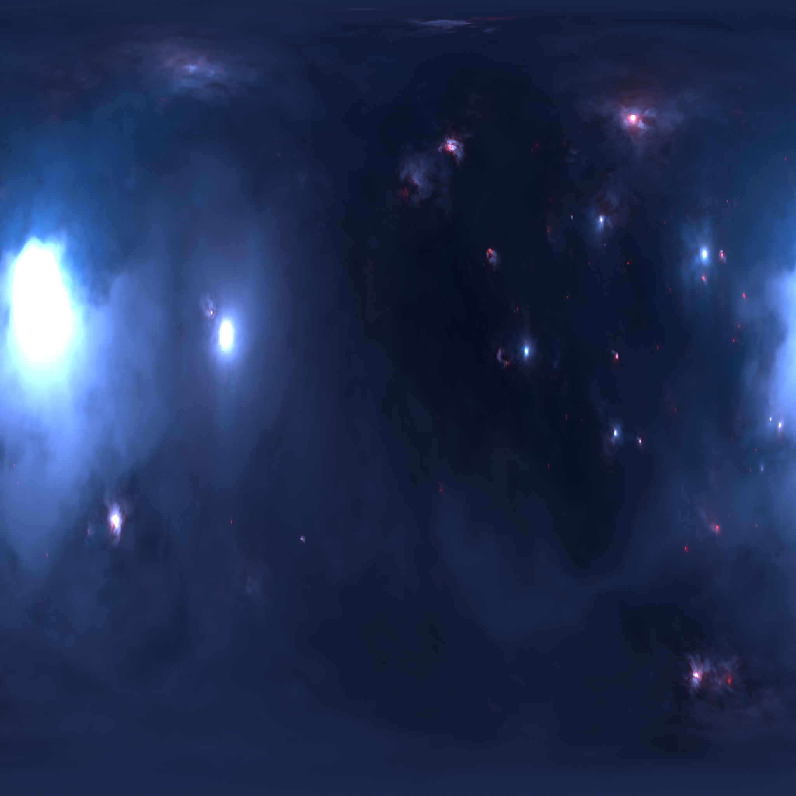
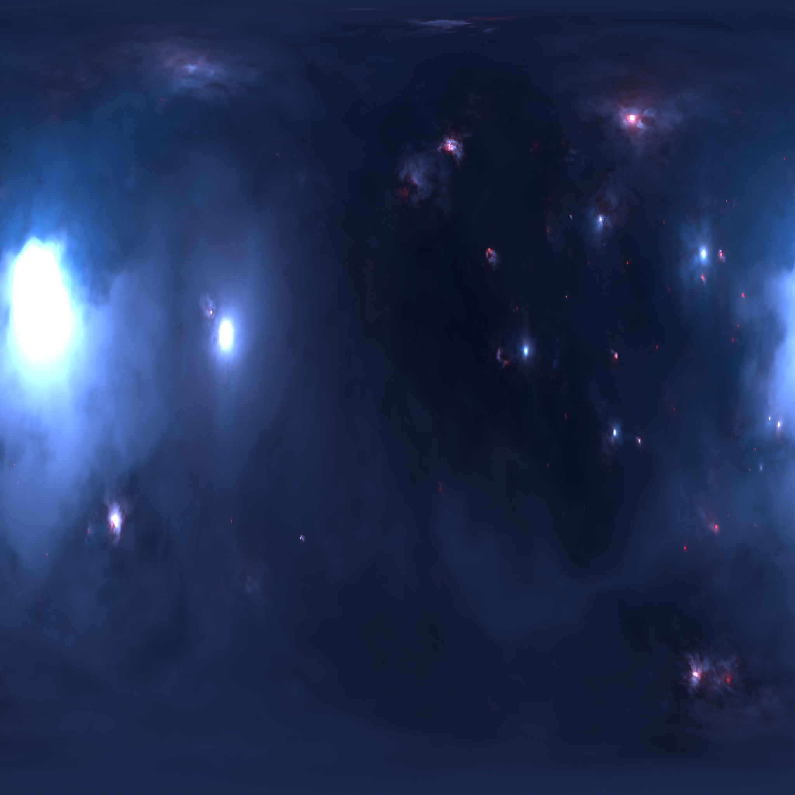
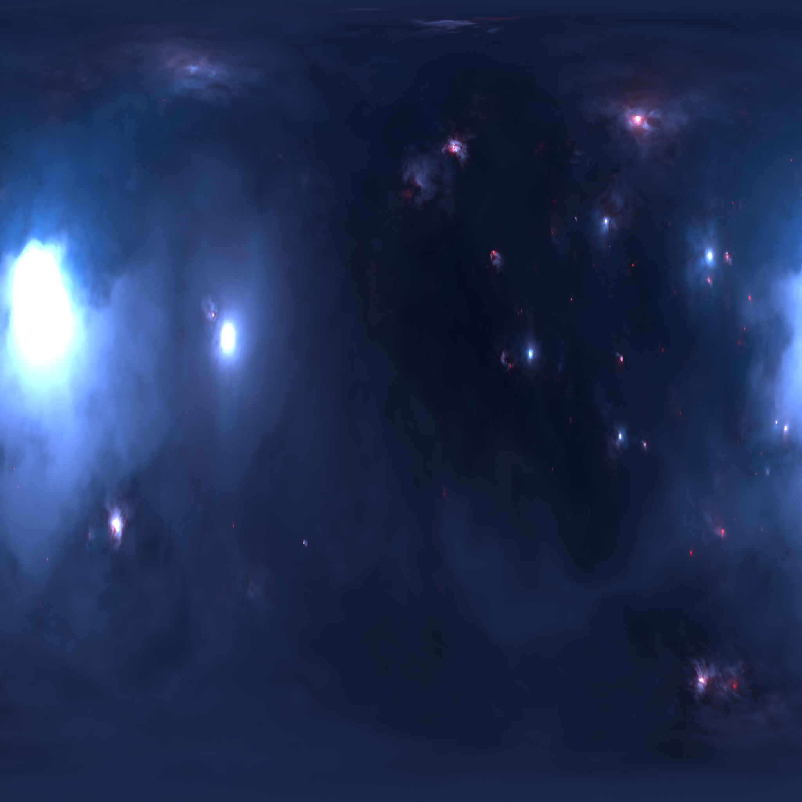

Back to start
Time: {{ timestring(r.time) }} / {{ r.time }}
Event counter: {{ r.eventCounter }}
Distance message: {{ r.distanceMessage || 'EMPTY' }}
{{ key }}
cometonics
messiermusics {{ key }}
galacticquasaric {{ key }}
bigbang
Global rotation: {{ String(r.globalRotation).split('.')[0] }}
Global scale: {{ String(r.globalScale).split('.')[0] }}
Playback speed (ms)
\
{{ r.come }}
{{ r.distanceMessage }}
{{ timestring(r.time) }}
 


